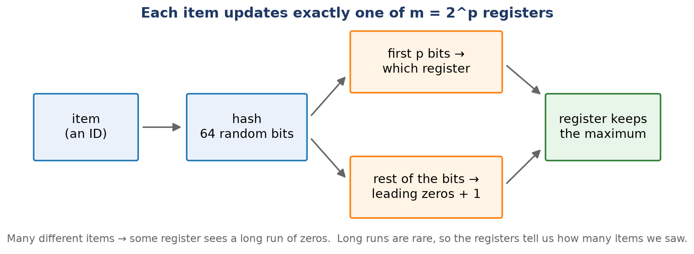
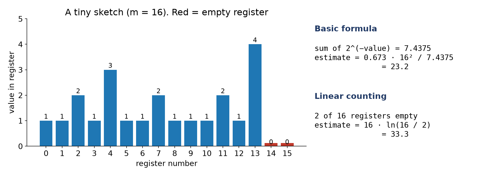
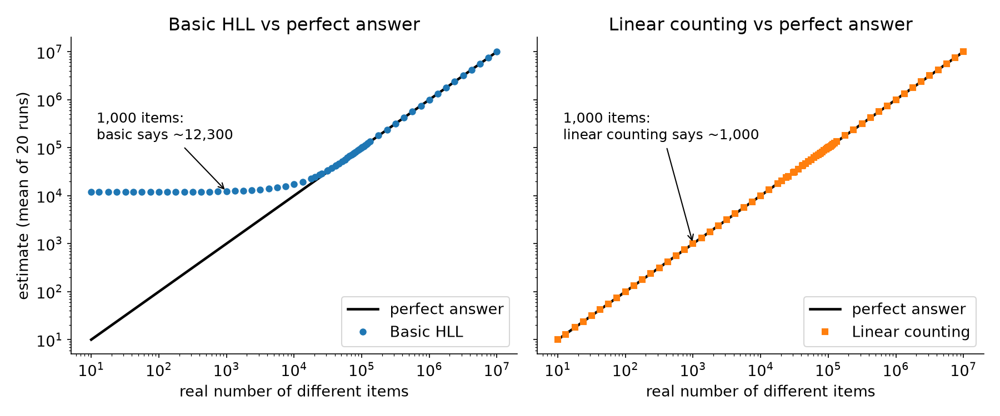
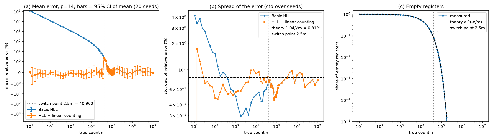
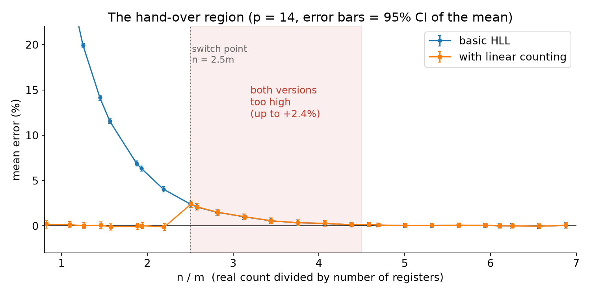
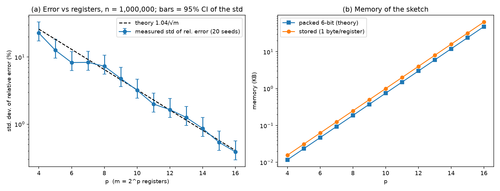
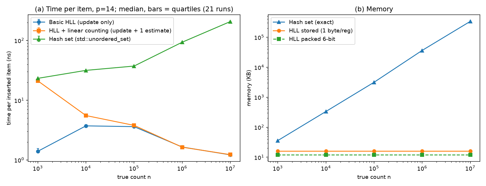
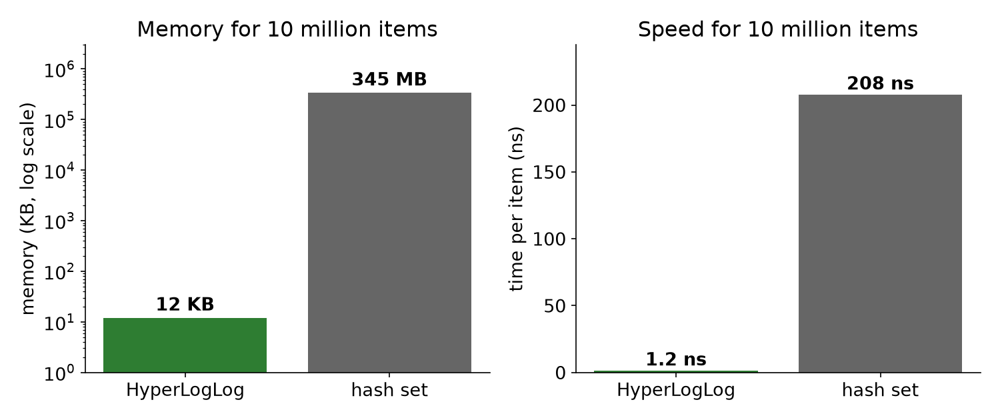
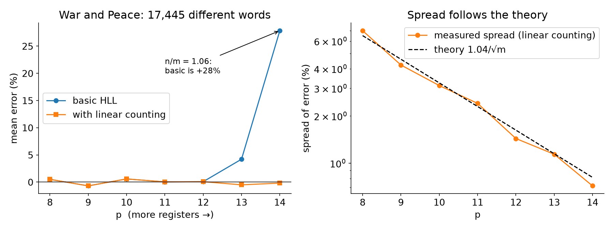

How accurate is HyperLogLog?
Ibrahim and Nika · Advanced Algorithms & Data Structures, Fall 2026 · project report
1. Summary
- Large counts: the error is about 0.8% for 16,384 registers, as the theory (1.04/√m) says, and it does not depend on how many items we count.
- Small counts: the basic formula is far too high (1,000 items: 12 times too big). Linear counting fixes this (error −0.05%).
- Surprise: between about 41,000 and 74,000 items, both versions are too high by up to 2.4%, because we switch to linear counting too early.
- Cost: HyperLogLog needs 12 KB for any count. An exact hash set needs 345 MB for 10 million items and is 8 to 170 times slower.
- A real text (War and Peace) gives the same picture.
2. The idea in short
HyperLogLog (HLL) counts how many different items are in a stream. It does not store the items. It keeps m small counters called registers (m = 2p). Each item is turned into a random 64-bit number (a hash). The first p bits say which register to use. In the other bits we count the zeros at the start: a long run of zeros is rare, so if some register has seen a long run, many different items must have passed by.

From the registers we compute an estimate. Example with 16 registers:

The same 16 registers give two answers. The basic formula says 23.2, linear counting says 33.3.
Linear counting is the fix for small counts. When many registers are still empty, we can estimate the count directly from the share of empty registers: m · ln(m / empty). We use it when the basic estimate is at most 2.5m and at least one register is empty. This only changes the last step, not how items are added.
3. What we did
- We wrote HLL from scratch in C++, with the hash XXH3-64. One sketch gives both estimates (basic and with linear counting).
- Inputs: random 64-bit IDs with repeats, so the real count is known exactly. Every point is repeated with 20 random seeds.
- Error = (estimate − real count) / real count. We report the mean and the spread (standard deviation) over the 20 seeds.
- Tests: counts 0, 1, 2; register edge cases; merging two sketches equals one sketch of all items; a hand-computed example; the switch rules of linear counting; invalid inputs; and the bias near 2.5m. They cover 100% of lines, functions and branches of the HLL and generator code (
make coverage). A separate check shows the hash is uniform (106 random and 106 sequential keys).
4. Experiment 1: error vs real count (p = 14)

The black line is the perfect answer. Left: basic HLL cannot go below about 12,000, even for 10 items. Right: linear counting lies exactly on the perfect line.

Bars in (a): 95% confidence interval of the mean over 20 seeds. (b): spread of the error. (c): share of empty registers; it follows the theory line. The dotted vertical line is the switch point 2.5m = 40,960 items: to the left of it the linear-counting version uses linear counting, to the right it uses the basic formula (so the two versions are identical there).
- Small counts. At 1,000 items basic HLL gives about 12,300 (+1130%), as predicted. With linear counting: −0.05% mean, spread 0.56%.
- Large counts. From 106 items the mean error is within ±0.25% of zero and the spread is 0.64–0.93%, around the theory 0.81%, with no trend in n.
- Empty registers follow e−n/m almost exactly, which is why linear counting works.
5. The surprise: the hand-over region

n/m is the real count divided by the number of registers. The switch to linear counting is at n/m = 2.5 (n = 40,960).
| n / m | 2.19 | 2.50 | 2.81 | 3.12 | 3.75 | 4.38 | 5.00 |
|---|
| basic error (%) | +4.04 | +2.41 | +1.49 | +1.00 | +0.34 | +0.12 | +0.03 |
| with linear counting (%) | −0.13 | +2.41 | +1.49 | +1.00 | +0.34 | +0.12 | +0.03 |
Explanation. The basic formula is a little too high in this range. The switch to linear counting looks at the estimate, not at the real count. Because the estimate is too high, it passes 2.5m while the real count is still about 2.5m. At n/m = 2.19 linear counting is used in all 20 runs; at 2.50 in none. So linear counting is turned off while the basic formula is still +2.4% too high, which is about three times the normal noise. Just before the switch, linear counting is accurate. We describe this effect but do not try to correct it. A test in our test suite checks that this bias really exists (p = 12: +2.3% at n = 2.5m).
6. Experiment 2: error vs number of registers (n = 106)

Bars in (a): 95% confidence interval of the spread (20 seeds).
| p | 4 | 6 | 8 | 10 | 12 | 14 | 16 |
|---|
| measured spread (%) | 22.8 | 8.28 | 7.30 | 3.20 | 1.65 | 0.87 | 0.39 |
| theory 1.04/√m (%) | 26.0 | 13.0 | 6.50 | 3.25 | 1.63 | 0.81 | 0.41 |
| mean error (%) | −3.5 | −4.5 | −0.65 | −0.53 | −0.12 | −0.12 | −0.02 |
| memory, 6-bit (KB) | 0.01 | 0.05 | 0.19 | 0.75 | 3.0 | 12 | 48 |
The measured spread follows 1.04/√m, and the theory value is inside the 95% interval for every p. Each extra bit of p doubles the memory and lowers the error by a factor √2. Very small sketches (m ≤ 64) also underestimate by 3.5–5.6%, so the theory value is only a rough guide for them.
7. Experiment 3: time and memory (p = 14)

Median of 21 timed runs, bars = quartiles. Keys are built before timing, after a warm-up, and every result is used.

| real count n | HLL ns/item | hash set ns/item | hash set memory | HLL memory (stored / 6-bit) |
|---|
| 1,000 | 1.4 | 23.3 | 37 KB | 16 KB / 12 KB |
| 100,000 | 3.6 | 37.4 | 3.2 MB | 16 KB / 12 KB |
| 106 | 1.7 | 94 | 37 MB | 16 KB / 12 KB |
| 107 | 1.2 | 208 | 345 MB | 16 KB / 12 KB |
- HLL is 8 to 170 times faster per item. The hash set slows down as it grows; HLL memory stays constant.
- Linear counting does not slow it down: adding items is the same code. Computing the estimate takes about 28 µs for both versions; linear counting adds about 1 µs at 1,000 items and nothing at larger counts. (The linear-counting curve in the first plot includes one estimate, so it is higher for few items.)
- HLL gets faster per item for large n (3.6 ns at 105, 1.2 ns at 107). Probably almost no register changes late in the stream, so the update is easy to predict; we did not test this.
- Hash set memory is the exact number of bytes the allocator was asked for.
8. Real data: distinct words in War and Peace
583,368 words, 17,445 different (counted exactly with a hash set). Public text from Project Gutenberg. The word order is fixed; the 20 seeds change only the hash.

| p | m | n/m | basic mean error | LC mean error | LC spread | theory |
|---|
| 10 | 1024 | 17.0 | +0.58% | +0.58% | 3.13% | 3.25% |
| 12 | 4096 | 4.26 | +0.08% | +0.08% | 1.44% | 1.62% |
| 13 | 8192 | 2.13 | +4.21% | −0.50% | 1.14% | 1.15% |
| 14 | 16384 | 1.06 | +27.85% | −0.18% | 0.72% | 0.81% |
Same two effects as before: when n/m is small, basic HLL is too high (+28% at p = 14) and linear counting fixes it; when n/m is large, both match 1.04/√m.
9. Answers, and corrections to our seminar slides
- Question 1. The error is about 0.8% (p = 14) for any count above about 4.5m. Below 2.5m basic HLL is far off, and linear counting fixes it. A small bump of up to +2.4% remains between 2.5m and 4.5m.
- Question 2. The spread follows 1.04/√m for all p from 4 to 16.
- Memory. 16,384 registers × 6 bits = 12 KB, not 1.5 KB (1.5 KB would be only 2,048 registers). Our code stores one whole byte per register, so 16 KB.
- Typical error. 0.81% for p = 14, not about 2% (2% belongs to p = 11: 1.04/√2048 = 2.3%).
- Slide 10 example. We did not have the seminar slides, so the test uses our own hand-computed example (the 16 registers above: basic 23.16, linear counting 33.27). Replace its numbers if the slide differs.
10. Limits
- 20 seeds: the spread values are uncertain by about ±16%.
- Points of Experiment 1 at different n share one stream per seed, so they are not independent.
- Timings come from one laptop, plugged in with other programs closed. An earlier run on battery gave nearly the same values. The ratios matter more than the exact nanoseconds.
- We use a 64-bit hash, so no correction for huge counts is needed. We did not try to correct the small bias in the hand-over region.
Code, data and all CSVs are in the project folder (README.md, results/FINDINGS.md).